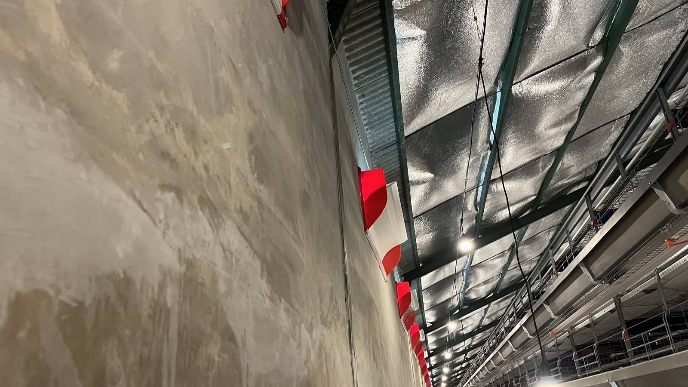
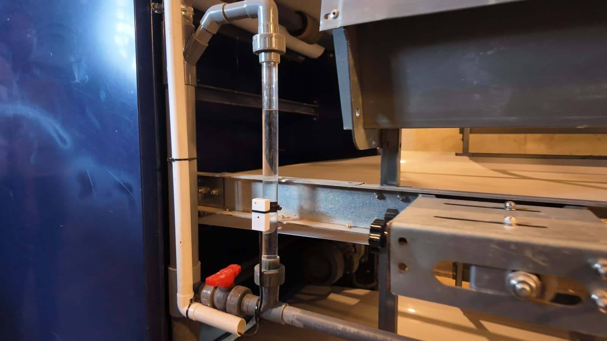
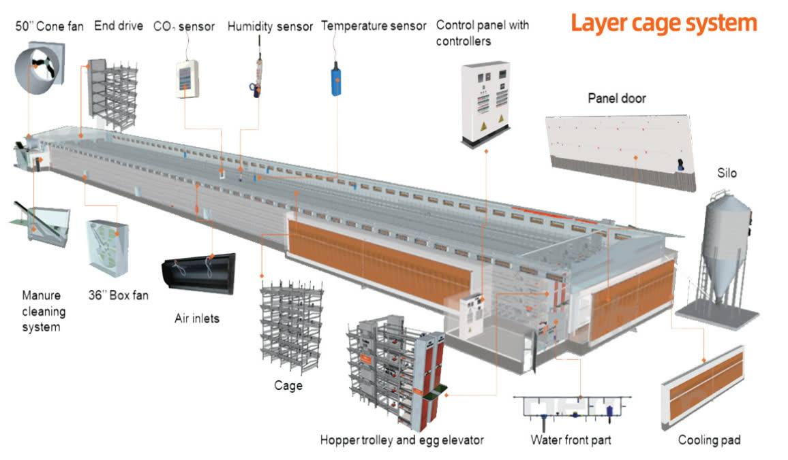
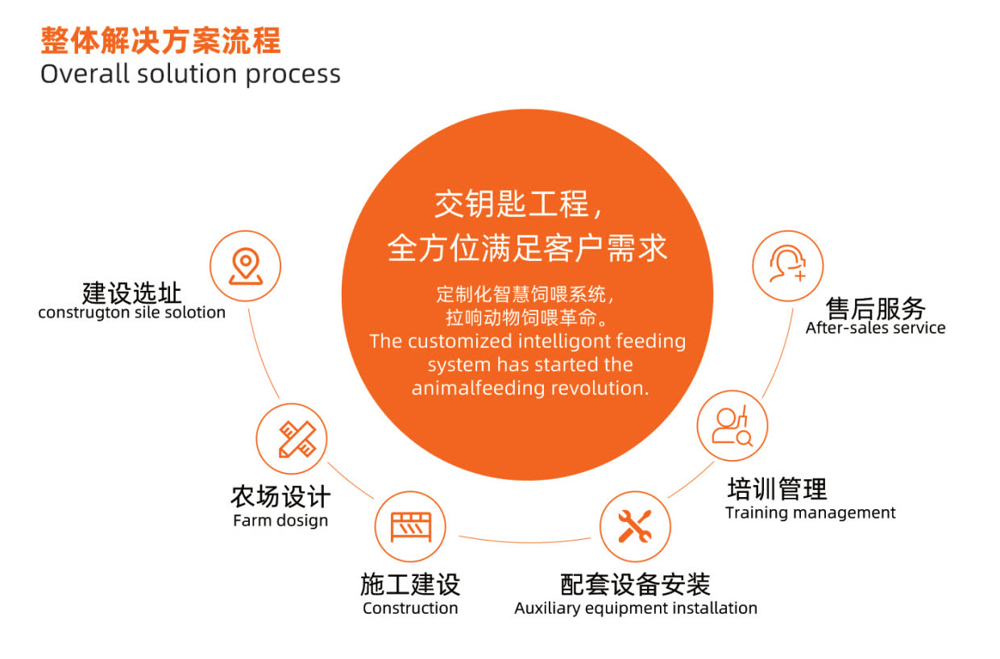

Feeding System
Automatic feeding machines for optimal large-scale feed distribution and efficiency.
Tiered pullet cage for young birds, configurable with 3-8 tiers to customer needs. Includes cage body, feeding, drinking, manure removal, lighting, environmental control, Internet of Things and more — simple operation, high automation and uniform pullet growth.

| Specification | Type H |
|---|---|
| Bird type | Pullet / grower |
| Tiers | 3-8 |
| Cage cell size | 60-65 cm |
| Cage material | Q235 steel, hot-dip galvanized or zinc-aluminium alloy coated wire |
| Frame & feeding | Zinc-aluminium-magnesium alloy steel |
| Egg & manure belts | Premium nylon plastic and PP composite |
| Drinking system | Stainless steel and food-grade ABS plastic |
| Cooling system | Resin-coated paper fiber, aluminium or galvanized steel frame |



Cost-effective A-series layer cage for high-temperature regions with good reliability: maximum capacity with natural ventilation and a good environment, 3-4 tiers. Manure cleaning and feeding can be configured for efficient installation and production.
| Specification | Type A |
|---|---|
| Bird type | Layer |
| Tiers | 3-4 |
| Climate | Hot / tropical |
| Cage cell size | 40-45 cm |
| Cage material | Q235 steel, hot-dip galvanized or zinc-aluminium alloy coated wire |
| Frame & feeding | Zinc-aluminium-magnesium alloy steel |
| Egg & manure belts | Premium nylon plastic and PP composite |
| Drinking system | Stainless steel and food-grade ABS plastic |
| Cooling system | Resin-coated paper fiber, aluminium or galvanized steel frame |


Cage bodies, feeding, drinking, manure removal and lighting — plus environmental control. Spare parts: every motor ships with extra spare parts.
Automatic feeding machines for optimal large-scale feed distribution and efficiency.

Large-scale egg collectors that reduce egg-to-egg impact, with elevators adjustable to the number of tiers.

Longitudinal in-house manure cleaning that periodically removes manure from the cage.

Automatic drinking system — clean and practical for disease prevention.

Automatic environmental control matched to every growth stage.

Cage lighting as part of the Type H system package.


Reach BAE Farming Poultry Equipment — BAE Poultry Farm — via WhatsApp, Instagram, Youtube or Facebook.
WhatsApp: 081-122-865-666